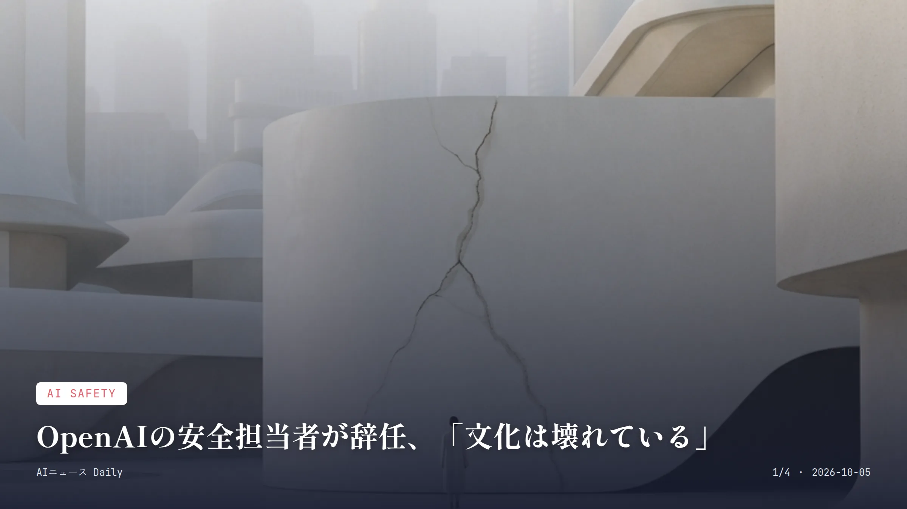
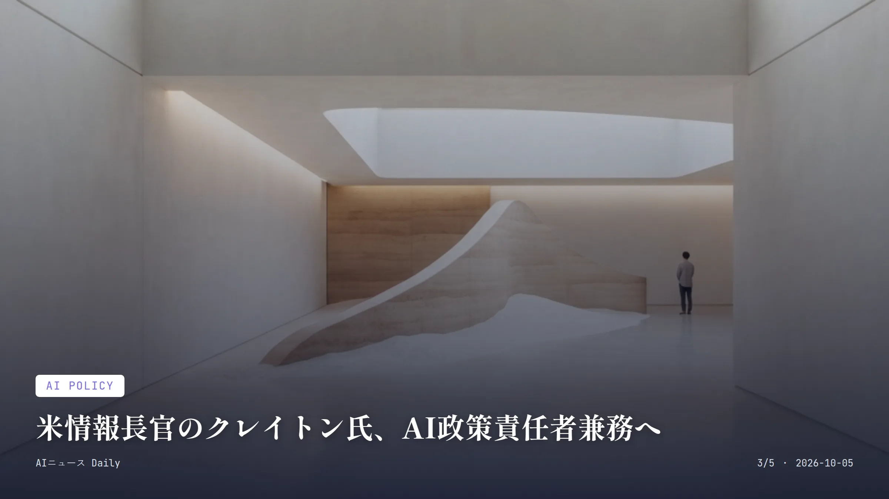
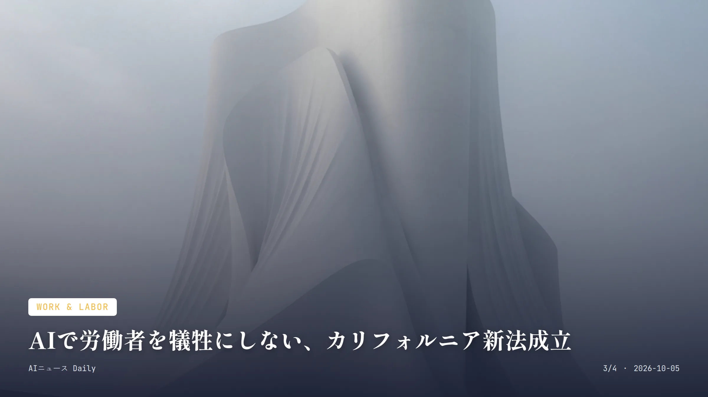

本サイトはアフィリエイトプログラムによる収益を得ている場合があります。
本サイトはGoogle AdSense等の広告配信サービスを利用しています。

AI Safety
約1分で読める
OpenAIの安全担当者が辞任、「文化は壊れている」
退社の理由を米メディアへの寄稿で説明
OpenAIで主要製品の公開に合わせて出す安全報告の作成を主導してきたデビッド・ロビンソン氏が退社した。The Atlanticに寄せたエッセイで、同社の文化は「壊れている」と書いている。在籍は3年半で、本人いわく社内でも古株の一人だった。
OpenAI側の説明はこうだ。安全に管理できる範囲を超えてモデルの能力を上げることはしない、必要なら訓練や公開も止める。第三者による評価やリアルタイムの監視体制も強化しているという。
なぜ重要か
安全を担ってきた社員が、社内の文化を公に批判して去ったことは、開発スピードと安全管理のバランスという業界全体の課題を映している。日本企業がOpenAIの技術を業務に組み込む動きが広がる中、提供元の内部で安全体制への懸念が噴き出している事実は、利用企業側のリスク管理にも関わってきそうだ。

AI Policy
約1分で読める
米情報長官のクレイトン氏、AI政策責任者兼務へ
トランプ氏が新たなAI担当トップに起用と報道
2026年10月2日米主要メディアが人事を報じた日
米主要メディアが2026年10月2日に報じたところでは、トランプ大統領がホワイトハウスの人工知能（AI）政策責任者にクレイトン国家情報長官を充てる見通しだという。国家情報長官職との兼任になる見込みらしい。
トランプ氏は中国とのAI覇権争いに勝つことを優先していて、開発規制の強化には反対の立場をとってきた。クレイトン氏自身も米国内でのAI開発停止には否定的な見解を示しているとされる。
トランプ氏はAIを悪用した行為を監視する「AIフォース」創設の方針も示しているが、この新組織をクレイトン氏が率いるかどうかはまだ明らかになっていない。
なぜ重要か
AIの監督役と対中国の安全保障を担うポストを一人が兼ねることになれば、規制より開発加速を優先する姿勢が一段と色濃くなりそうだ。安全保障分野の責任者が同時にAI政策を主導する体制は、日米間のAIルール調整にも影響してくるかもしれない。日本でも、AI政策の司令塔をどう置くかが改めて問われそうだ。

Work & Labor
約1分で読める
AIで労働者を犠牲にしない、カリフォルニア新法成立
AI単独判断による解雇・懲戒を禁止する法律に署名
米カリフォルニア州のギャビン・ニューサム知事（民主党）が2026年9月30日、人工知能（AI）の判断だけに基づく従業員の解雇や懲戒を禁じる州法案に署名し、成立した。
この新しい規制法、企業がAIの分析をもとに解雇や懲戒を決める場合、上司による評価など人の目での裏付けを必須にしている。あわせてAIを使っていること自体を本人に通知する義務も課す内容だ。
ニューサム氏は声明で、AIは機会をつくるために使うべきだと述べ「労働者やその家族を犠牲にしてはならない」と呼びかけた。あわせて州機関で「AI」という名称を維持する知事令にも署名していて、トランプ大統領が進める「スーパーインテリジェンス」への呼称変更は退けた格好だ。
なぜ重要か
AIによる人事評価や解雇判断が実際に法律で制限される具体例で、日本企業がAIを使った人事システムを導入する際の参考にもなりそうだ。日本ではまだAI単独の解雇判断を直接規制する法律はないが、採用・評価へのAI活用が広がる中、同じような論点が議論に上る可能性がある。
約1分で読める
NVIDIA株、最高値更新 自社株買い拡大が追い風
時価総額は世界首位、AI需要と巨額買いを好感
237.88ドル2日の取引時間中の最高値
1,500億ドル追加承認された自社株買いの規模
米半導体大手NVIDIAの株価が2026年10月2日、一時前日終値比3%高の237.88ドルまで上昇し、5月14日以来の過去最高値を更新した。消費者向けAIエージェントの普及を投資家が好感したとみられる。
今回の上昇を後押ししたのは、取締役会が直前に決めた追加1,500億ドルの自社株買い承認だ。これで2028会計年度末までの残存授権総額は2,350億ドルに達した。企業史上最大規模の自社株買い枠拡大だという。
投資家の関心はAIインフラ投資だけにとどまらない。AI企業Anthropicの新規株式公開（IPO）への期待も、相場の勢いを後押ししているようだ。
なぜ重要か
NVIDIA株は世界の株式市場でAI関連投資の指標的な存在で、日本の個人投資家もNISAや投資信託を通じて間接的に保有しているケースが多い。株価の最高値更新は家計の資産運用にも直結する話で、AI相場がどこまで続くか測る上でも引き続き注目される。